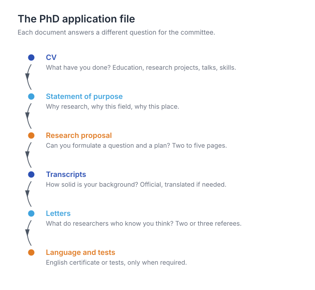

Guides · Careers
The PhD application file
The academic CV, the statement of purpose, the research proposal, the letters of recommendation and the interview. What each document is for, and how to make it specific.
Path · Applying for a PhD abroad · step 4 of 5
Next in this path: Funding your PhD and finding scholarships →
A PhD application is read by busy people who compare many files. Each document has one job. The best files are short, specific and consistent: the CV, the statement and the letters tell the same story from different angles.
The academic CV#
An academic CV is not a job CV. It is organized around research and training.
- Contact details: name, email, current position, and links (ORCID, Google Scholar, personal page).
- Education: degrees in reverse order, with the thesis title and supervisor for each research degree.
- Research: preprints and publications in a consistent citation format, then the master's thesis.
- Talks and posters, schools and workshops attended.
- Scholarships, awards and prizes.
- Teaching and tutoring, if any.
- Skills: languages with levels, programming and software actually used.
- References: names, positions and emails of two or three referees.
Keep it to one or two pages at this stage. No photo, no date of birth, unless the country requires them. Use a clean template, for example in LaTeX.
The statement of purpose#
The statement answers three questions: what do you want to work on, why are you prepared for it, and why this place?
- Open with your research interest, stated precisely, not with a childhood story.
- Describe one or two research experiences in detail: what the question was, what you did, what you learned. Details convince more than adjectives.
- Explain the fit: name specific people, groups or seminars at the institution and say why they matter for your project.
- End with your goal: what you hope to achieve during the PhD and after.
Typical length: one to two pages. Follow the exact limit and prompt of each programme. Write a new version for each application. A generic statement reads as generic.
The research proposal#
Some systems (for example many in the United Kingdom, Germany and for some scholarships) ask for a research proposal. A good proposal is modest and concrete:
- Title and a short summary.
- Background: what is known, with the essential references.
- Question: the precise problem and why it matters.
- Approach: the methods you will use and why they should work.
- Plan: a realistic timeline, with a first step you could start next month.
- References.
Nobody expects you to know exactly what your thesis will contain. The proposal shows that you can formulate a research question and think about how to attack it. It is also a natural starting point for a conversation with a supervisor.
Letters of recommendation#
Letters often decide the outcome. Choose referees who know your research work, not only your grades: your master's thesis supervisor first, then a professor whose course or project you did well in.
- Ask at least four to six weeks before the deadline.
- Send each referee your CV, your statement, the list of programmes with deadlines, and a short paragraph reminding them of what you did with them.
- Send a polite reminder a week before each deadline.
- Thank them, and tell them the outcome.
Transcripts, language tests and other documents#
Check early whether you need certified translations of transcripts, a degree equivalence, or a language test. These take time. Keep a folder with scanned copies of everything.
The interview#
Many programmes and most advertised positions include an interview, often by video.
- Prepare a five-minute explanation of your master's thesis, for a mathematician who does not know the topic.
- Reread your statement and proposal. Every sentence in them is a possible question.
- Prepare two or three questions of your own about the group and the project.
- Test your camera, microphone and connection. Have a pen and paper ready.
- It is fine to say "I do not know, but I would approach it like this."
Checklist#
- My CV is research-focused and fits on one or two pages.
- Each statement is written for the specific programme and names people or groups.
- My proposal states a precise question and a realistic first step.
- My referees know my research and have all the information they need.
- I have checked translations, equivalences and language tests early.
- I can explain my master's thesis in five minutes.
Discussion
Questions, corrections and your own experience are welcome. Comments live in the forum, on GitHub Discussions, with Markdown and LaTeX.